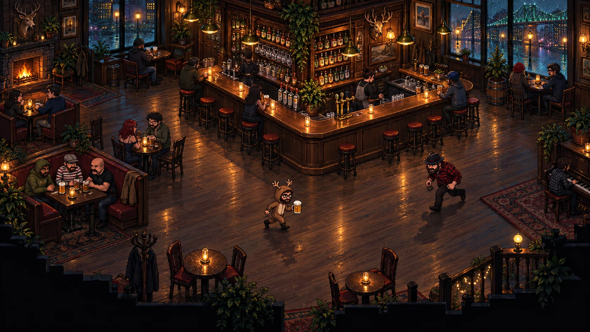

A
Candlelight Cinema
Make the pub itself the star. Rich material detail and authored light turn every shift into a place players want to inhabit.
- Best for
- Atmosphere, screenshots, story
- Art rule
- 24-32 px cast, layered light
- HUD rule
- Quiet brass instruments
- Tradeoff
- Highest production workload
Reference traits: environmental density from Eastward and pixel-consistent dynamic light from Sea of Stars.